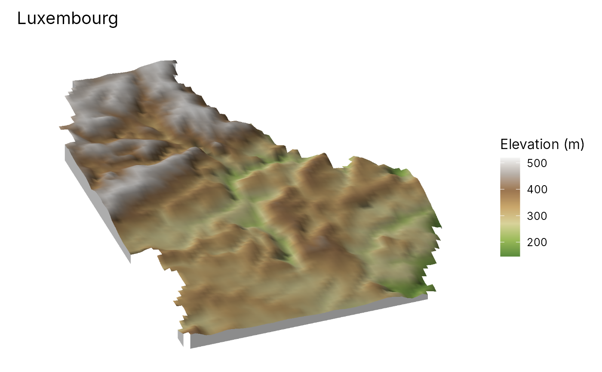

3D terrain maps
geo_map3d.Rdgeo_map3d() renders a digital elevation model as a 3D block diagram:
the terrain is lit by the sun with cast shadows, seen from any direction
and angle, coloured by elevation or by any other raster draped over it
(land cover, NDVI, a diversity surface, a model prediction), with sites
and routes placed on the surface and hidden where hills are in front of
them. The rendering is done in C++ and needs no OpenGL, rgl or
rayshader, so it works on servers and in reports; the result is an
ordinary ggplot with a title, legend and caption, saved with
geo_save().
Usage
geo_map3d(
dem,
drape = NULL,
palette = "auto",
exaggeration = "auto",
theta = 200,
phi = 35,
sun_azimuth = 315,
sun_elevation = 35,
shadow = TRUE,
ambient = 0.35,
base = TRUE,
points = NULL,
lines = NULL,
label = NULL,
point_colour = "#D7301F",
line_colour = "grey10",
max_cells = 500,
width = 1600,
height = 1100,
title = NULL,
subtitle = NULL,
caption = NULL,
legend_title = NULL
)Arguments
- dem
A
SpatRasterof elevation (metres). Longitude/latitude rasters are projected to UTM first so that heights and distances share units.- drape
What colours the surface:
NULL(elevation, hypsometric tints) or aSpatRasterresampled onto the DEM.- palette
Colour ramp for the drape:
"auto"(a hypsometric ramp for elevation, a sequential ramp otherwise), a name fromgrDevices::hcl.pals()or a vector of colours.- exaggeration
Vertical exaggeration.
"auto"makes the relief about a fifth of the width of the area, a common choice for block diagrams, between 1 and 8 times.- theta
Direction the viewer looks from, in degrees clockwise from north (
180= from the south,225= from the south-west).- phi
Viewing angle above the horizon, in degrees (
90= straight down).- sun_azimuth, sun_elevation
Direction and height of the sun, in degrees. The cartographic default lights from the north-west.
- shadow
Cast shadows?
- ambient
Share of light in shadow (0 = black shadows).
- base
Draw the sides of the block down to a base?
- points, lines
Optional
sflayers drawn on the surface.- label
Column of
pointswith text labels.- point_colour, line_colour
Colours of the overlays.
- max_cells
Largest number of DEM cells along a side; larger DEMs are averaged down to it.
- width, height
Image size in pixels.
- title, subtitle, caption, legend_title
Text of the figure.
See also
geo_stac_read() to fetch a Copernicus DEM, map_raster() for
flat maps.
Examples
elev <- terra::rast(system.file("ex/elev.tif", package = "terra"))
geo_map3d(elev, theta = 200, phi = 35, title = "Luxembourg")
